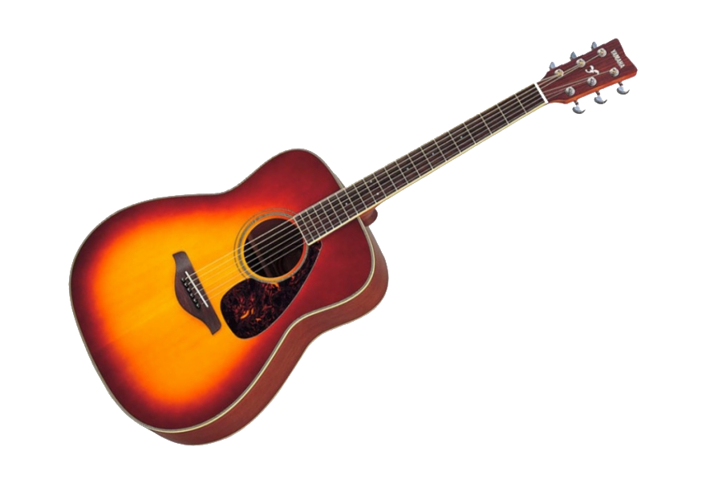

Gitara jest to bardzo ciekawy instrument. Ma przyjemne brzmienie. Można bardzo łatwo rozluźnić atmosferę z jej pomocą. Gra na gitarze akustycznej to pasjonujące i satysfakcjonujące zajęcie, które może dostarczyć wiele radości i możliwości artystycznych. Dla początkujących jest to także szansa na naukę podstawowych technik gry oraz zrozumienie podstawowej teorii muzycznej. W tym artykule przedstawimy poradnik dla osób rozpoczynających swoją przygodę z gitarą akustyczną. Obejmuje on wszystko, czego potrzebujesz, aby rozpocząć naukę i rozwijać swoje umiejętności.
Dla początkujących przydatne są podane akordy:

Linki:
Przydatny filmik